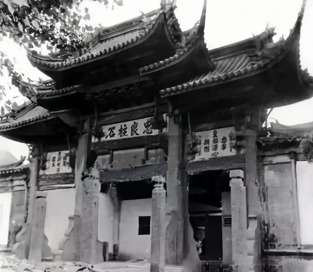
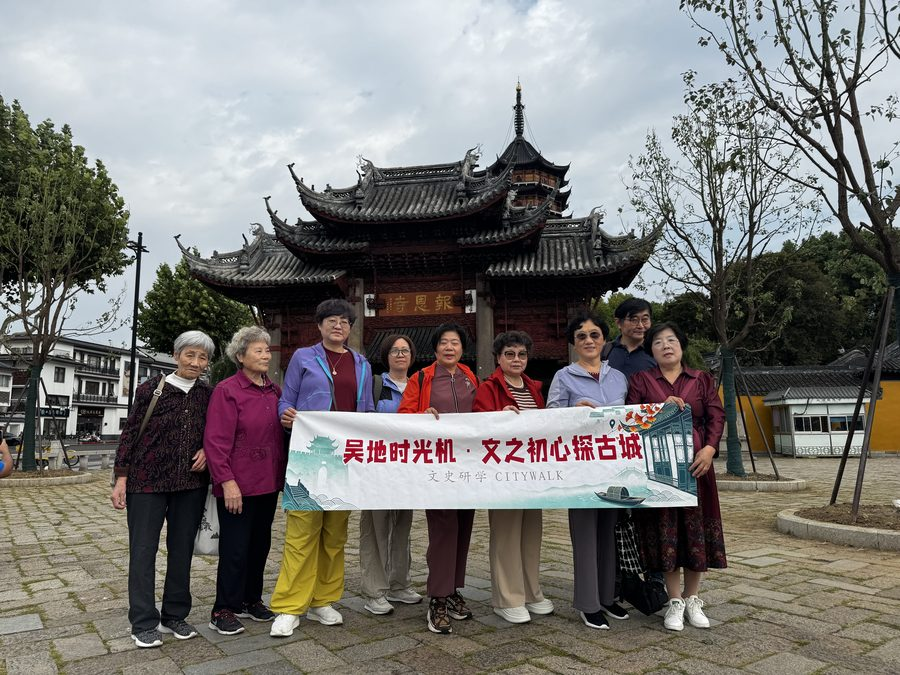
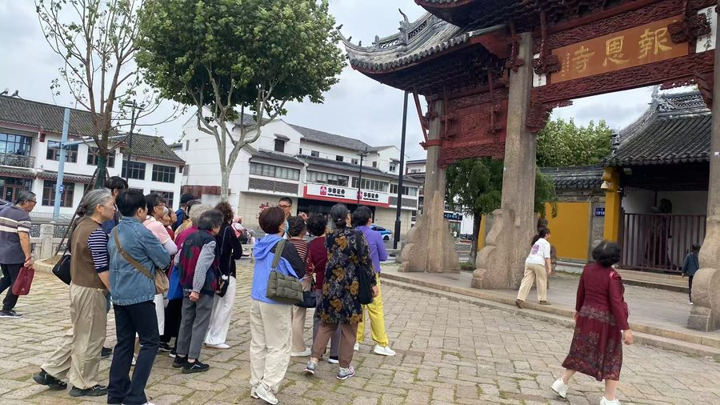

01
山门 · 牌楼申时行祠牌楼 · 1979 年移建



进门之前先回头：这座牌楼不是报恩寺的原生建筑，它是明代万历年间内阁首辅申时行家祠堂门前的牌楼，1979 年 9 月移建到这里。四柱三间五楼、飞檐翘角，中柱高近 10 米、每柱重约 8 吨，斗拱用香樟木，是苏州仅存的明代石柱木构大型牌楼。
同一座牌楼，挂什么匾，就讲什么故事。
匾额的三次改题：申祠原额「忠良柱石」→ 赵朴初题「知恩报恩」→ 今为苏州书法家华人德先生书「报恩寺」，背面「北塔胜迹」。